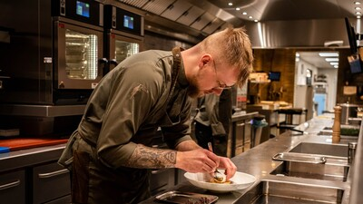

Over de kok

Wie is Tobias?
Ik ben Tobias den Hollander, en koken is mijn passie. Elke week sta ik in de keuken, en het liefst maak ik gerechten uit Italië. Aan tafel komen mensen samen, en een goed bord eten maakt een avond af. Daarom staat deze website vol met dingen die ik graag deel.
Mijn kookstijl
Ik hou van de Italiaanse keuken: eerlijk eten met goede ingrediënten, geen onnodig ingewikkeld gedoe en veel smaak. Een gerecht mag best even sudderen, want dat is vaak precies wat het lekker maakt.
Kookt: elke week
Lievelingskeuken: de Italiaanse keuken
Favoriete gerecht: ragù bolognese
Favoriete ingrediënt: [bijvoorbeeld knoflook]
Mijn favoriet: ragù bolognese
Van alle gerechten die ik maak, is ragù bolognese mijn favoriet. Het is een rijke vleessaus die lang en zachtjes mag trekken, en daar zit ook meteen het geheim: geduld. Hoe langer de saus pruttelt, hoe dieper de smaak.
Wat zit er in?
- Gehakt (soms een mix van rund en varken)
- Soffritto: fijngesneden ui, wortel en bleekselderij
- Tomatenpuree en tomaat
- Een scheutje wijn en wat melk of bouillon
- Zout, peper en laurier
Mijn kooktips
- Lees het hele recept door voordat je begint.
- Zet alle ingrediënten klaar voordat je gaat koken.
- Proef onderweg en breng op smaak met zout, zuur en peper.
- Gebruik een scherp mes. Dat is veiliger en sneller.